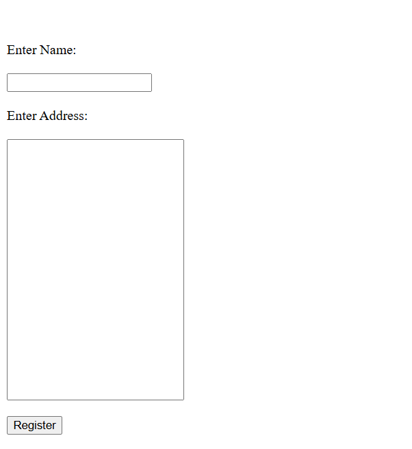

Forms¶
The form class and its methods can produce various types of forms that can be used to collect and store different kinds of data from the users such as text fields, radio button choice, checkboxes and so on.More info regarding html forms can be (read here).The simple example given below should help in getting an idea of what html forms are.
simple_form=form(action="submit.js",method="POST")
line_break()
line_break()
simple_form.label("Enter Name:")
line_break()
line_break()
simple_form.input("text")
line_break()
line_break()
simple_form.label("Enter Address:")
line_break()
line_break()
simple_form.input("text",style={"width":"200px","height":"300px"})
line_break()
line_break()
simple_form.input("submit",value="Register")
simple_form.close()
This produces a simple form of submitting name and address for registration(Check image below for output)
The following code is for creating a checkbox for the users choice of his favourite programming language
checkform=form()
checkform.label("Enter the programming language of your choice")
line_break()
checkform.input("checkbox",checkbox_list=["Javascript##","Python##","C++##"])
checkform.close()
Unfortunately,the official html form doesn’t automatically add a blank line after each individual form element.In fact it doesn’t even make the next form element come on the next line.So inorder to get the forms to look as in the images above, we need to add required number of cursor to next lines and blank lines by calling the line_break() function.
- class form(action, method, style, attr_list)¶
The form constructor is used to decide the action to be performed when form is submitted and the type of method used for the same.The other arguments to the form constructor are the style dictionary and attribute list applied to the from tag or entire form as a whole
- Parameters:
action (str) – The action to be performed when the form is submitted
method (str) – The type of method used for form submission which can be either GET or POST
style (dict(str)) – Style dictionary for all the styles to be applied to entire form,eg background-color
list(str) – List of attributes to be applied to the entire form element as a whole
- label(text, id='', style={}, attr_list=[])¶
- Parameters:
text (str) – The string of text to be displayed as the label
id (str) – The id used for identifying label which is same as id for its respective input
style (dict(str)) – Dictionary with strings for key value pairs that contains style information to be applied to label
atttr_list (list(str)) – The list of attributes each in the form of string that can be applied to the label to change its look and behaviour
- Returns:
Nothing
- Return type:
None
Provides a label or short description for the text input field below.The only mandatory argument is the text string which is the label text.The optonal id attribute is useful for styling the label in the style block under head tag(using the all_styles() function) as well as to group this label to its corresponding text input and this consequently requires the id of label to be the same as the id of the text input for which it is the label for.Id argument is passed as a string of text of your choice which can be numbers,strings or a combination of both.The attr_list is a list of attributes that can determine the appearance/behaviour of the label element.As always, style dictionary argument is a dictionary of the styles to be applied to the label in the form of key(property) value(value for the property) pairs
- input(type='', id='', name='', value='', style={}, attr_list=[], radio_button_list=[], radio_attribute_list=[], radio_style_list=[], radio_label_attribute_list=[], radio_label_style_list=[], checkbox_list=[], checkbox_attribute_list=[], checkbox_style_list=[], check_label_attribute_list=[], check_label_style_list=[])¶
- Parameters:
type (str) – What type of input is to be created, passed as a string argument within quotes.The type of input can be “text”,”submit”,”radio”,”checkbox” and many other options too.Read below to know about all the common type of inputs possible in html.
id (str) – The id used for identifying input element which can be used for styling as well as assigning a label to be displayed above this input field by specifying the same id for input and label
name (str) – The name assigned to the input field. This is useful for post processing of forms at backend after the form data is submitted by the user
value (str) – The value argument is for the form text input field and specifies the default value of the input field. When the page loads, the value attribute sets the initial content of the input box. If the user modifies the input, the new text entered replaces the initial value.
style (dict(str)) – Dictionary that contains css styling information to be applied to the input form field in the form of strings as key value pairs representing css properties and their values
atttr_list (list(str)) – The list of attributes each in the form of string that can be applied to the form input element to change its look and behaviour
radio_button_list (list(str)) – list of strings with each string being the text next to a radio button or in other words the choices for the user to select in radio button
radio_attribute_list (list(str)) – The list of attributes each in the form of string that can be applied to each individual radio element in order
radio_style_list (list(dict(str))) – list of dictionaries that contains css styling information for each indiviual radio element in order.So both attributes and styling can be applied separately for all the radio elements or in other words for all choices in the radio button
radio_label_attribute_list (list(str)) – The list of attributes, each in the form of string for the label of each individual radio elements
radio_label_style_list (list(dict(str))) – list of dictionaries that contains css styling information for each indiviual label for each radio element in order.So both attributes and styling can be applied separately for all the radio elements as well as their respective labels
checkbox_list (list(str)) – list of strings with each string being the text next to a checkbox box or in other words the choices for the user to select in checkboxes(text in labels for each checkbox)
checkbox_attribute_list (list(str)) – The list of attributes each in the form of string that can be applied to each individual checkbox element in order
checkbox_style_list (list(dict(str))) – list of dictionaries that contains css styling information for each indiviual checkbox element in order.So both attributes and styling can be applied separately for all the checkbox elements or in other words for all choices in the checkboxes
check_label_attribute_list (list(str)) – The list of attributes, each in the form of string for the label of each individual radio elements
check_label_style_list (list(dict(str))) – list of dictionaries that contains css styling information for each indiviual label for each checkbox element in order.So both attributes and styling can be applied separately for all the checkbox elements as well as their respective labels
- Returns:
Nothing
- Return type:
None
Provides a feauture for taking in input from the user.This user input may be in the form of a text field for taking in text typed by the user such as username, password and so on. It can also be in the form of a button for performing certain actions such as submitting the typed text responses from the user to server or to go to a new page from the current page and so on. It can also be in the form of radio buttons (circles next to text for them to select) and checkboxes (boxes next to text labels)
- fieldset(legend='', style={}, attr_list=[], radio_button_list=[], radio_attribute_list=[], radio_style_list=[], radio_label_attribute_list=[], radio_label_style_list=[], checkbox_list=[], checkbox_attribute_list=[], checkbox_style_list=[], check_label_attribute_list=[], check_label_style_list=[])¶
- Parameters:
legend (str) – Fieldset is like creating a separate bordered section for radio or checkbox buttons legend is the string of text that will be displayed on top od radio/checkbox buttons
style (dict(str)) – Dictionary that contains css styling information to be applied to the fieldset in the form of strings as key value pairs representing css properties and their values
atttr_list (list(str)) – The list of attributes each in the form of string that can be applied to the fieldset form element to change its look and behaviour
radio_button_list (list(str)) – list of strings with each string being the text next to a radio button or in other words the choices for the user to select in radio button with the radio buttons being a part of the fieldset
radio_attribute_list (list(str)) – The list of attributes each in the form of string that can be applied to each individual radio element in order
radio_style_list (list(dict(str))) – list of dictionaries that contains css styling information for each indiviual radio element in order.So both attributes and styling can be applied separately for all the radio elements or in other words for all choices in the radio button
radio_label_attribute_list (list(str)) – The list of attributes, each in the form of string for the label of each individual radio elements
radio_label_style_list (list(dict(str))) – list of dictionaries that contains css styling information for each indiviual label for each radio element in order.So both attributes and styling can be applied separately for all the radio elements as well as their respective labels
checkbox_list (list(str)) – list of strings with each string being the text next to a checkbox box or in other words the choices for the user to select in checkboxes(text in labels for each checkbox) with the checkboxes being a part of the fieldset
checkbox_attribute_list (list(str)) – The list of attributes each in the form of string that can be applied to each individual checkbox element in order
checkbox_style_list (list(dict(str))) – list of dictionaries that contains css styling information for each indiviual checkbox element in order.So both attributes and styling can be applied separately for all the checkbox elements or in other words for all choices in the checkboxes
check_label_attribute_list (list(str)) – The list of attributes, each in the form of string for the label of each individual radio elements
check_label_style_list (list(dict(str))) – list of dictionaries that contains css styling information for each indiviual label for each checkbox element in order.So both attributes and styling can be applied separately for all the checkbox elements as well as their respective labels
- Returns:
Nothing
- Return type:
None
Other choices for user input¶
Other than text input, submit, rado buttons and checkboxes, many other input types are also available such as the very common button.The difference between submit and button inputs is that submit is mainly used for just submiiting the form data to the url specified and cannot be cutomised much whereas the button input can be customised to include other text or even images or other elements inside. submit submits the form data on its own whereas button doesn’t do so and its behaviour has to be defined through javascript or attributes. The other common input types in html are given in the table below and you can use any one of these by giving its exact name for the type parameter eg,f=form()n f.input(type=”button”) In the table below,html codes are given so as to have some familiarity with original html.While using any of the following input types, make sure to add the exact text given in quotes below to the type parameter of the Form.input() method.More info about these input types are available here
Other common input types |
What it does |
|---|---|
<input type=”button”> |
Creates a button which can be configured to perform some action when user clicks on it |
<input type=”color”> |
Used for allowing the user to select a color via a color picker that shows up when clicked |
<input type=”date”> |
Select date using a datepicker that shows up.min & max atrributes for setting the range |
<input type=”datetime-local”> |
Date without timezone |
<input type=”email”> |
For input fileds that expects an email address |
<input type=”file”> |
|
<input type=”hidden”> |
|
<input type=”image”> |
|
<input type=”month”> |
|
<input type=”number”> |
|
<input type=”password”> |
|
<input type=”radio”> |
|
<input type=”range”> |
|
<input type=”reset”> |
|
<input type=”search”> |
|
<input type=”submit”> |
|
<input type=”tel”> |
|
<input type=”text”> |
|
<input type=”time”> |
|
<input type=”url”> |
|
<input type=”week”> |
Some examples¶
This example is a py4html reprodcution of the one given in w3 schools website <https://www.w3schools.com/html/tryit.asp?filename=tryhtml_input_password>`_ You won’t notice any difference if you compare the two and that’s because py4html has all the feautures necessary to do the recreation as close to the html version as possible. Notice how transform_text() function is called within the staring argument to paragraph function() to make only certain words of paragraph to be bold
from py4html import *
bigger_heading("Password field")
paragraph("The "+ transform_text('input type="password"',"important")+ "defines a password field")
pass_form=form(action="/action_page.php")
pass_form.label("Username",id="un")
line_break()
pass_form.input("text",id="un")
line_break()
pass_form.label("Password",id="pa")
line_break()
pass_form.input("password",id="pa")
line_break()
line_break()
pass_form.input("submit",value="submit")
pass_form.close()
paragraph('The characters in a password field are masked (shown as asterisks or circles).')